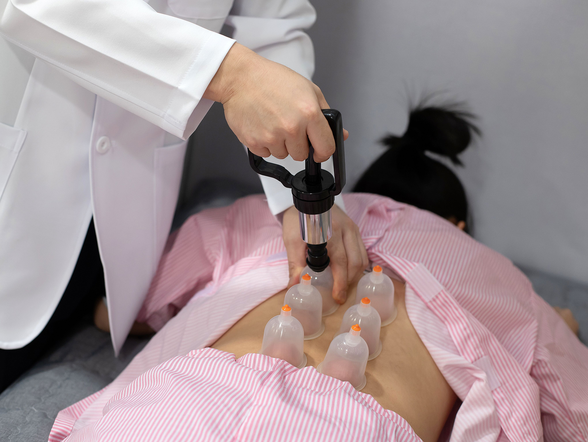
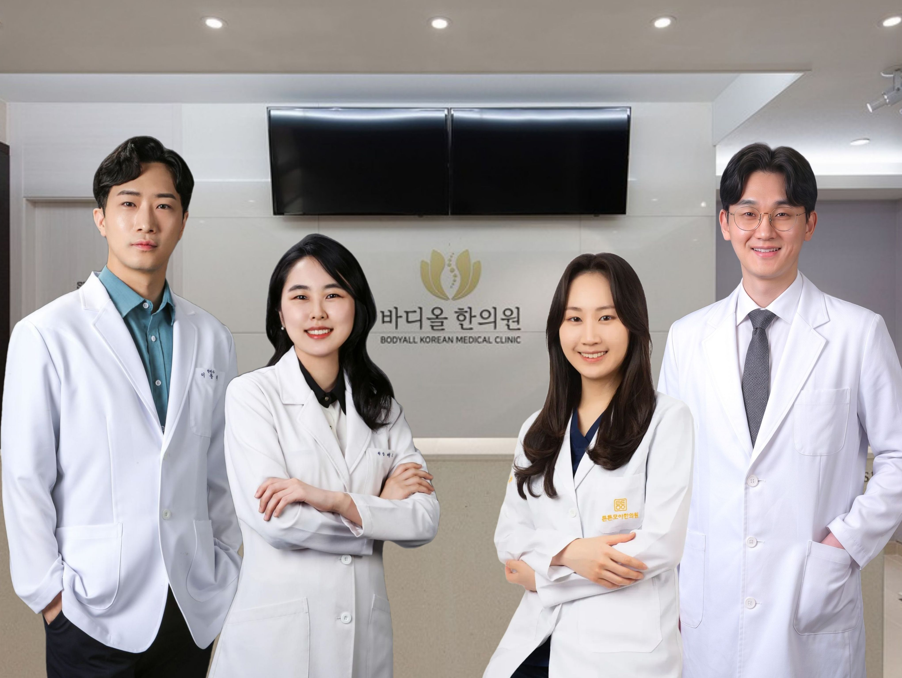
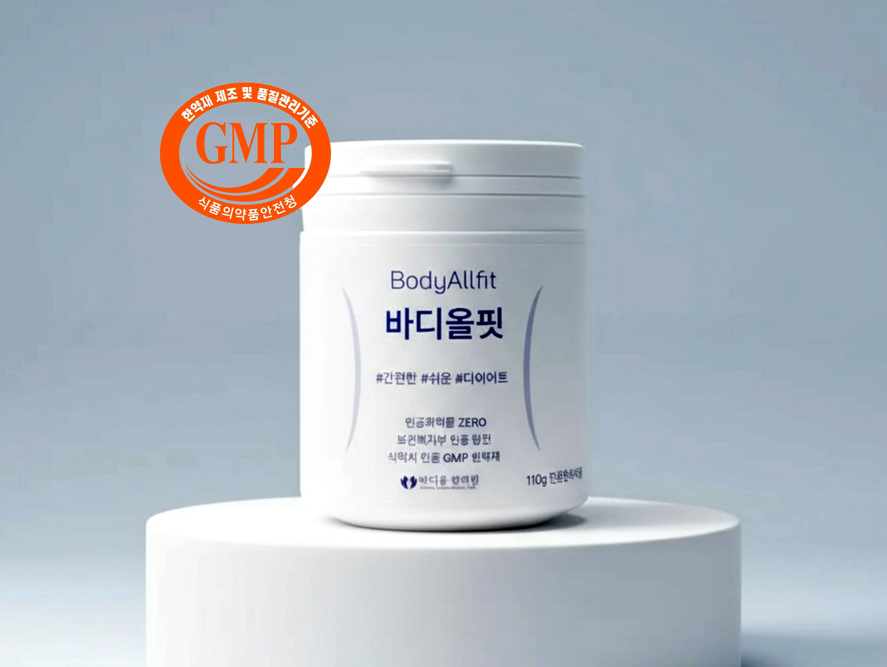
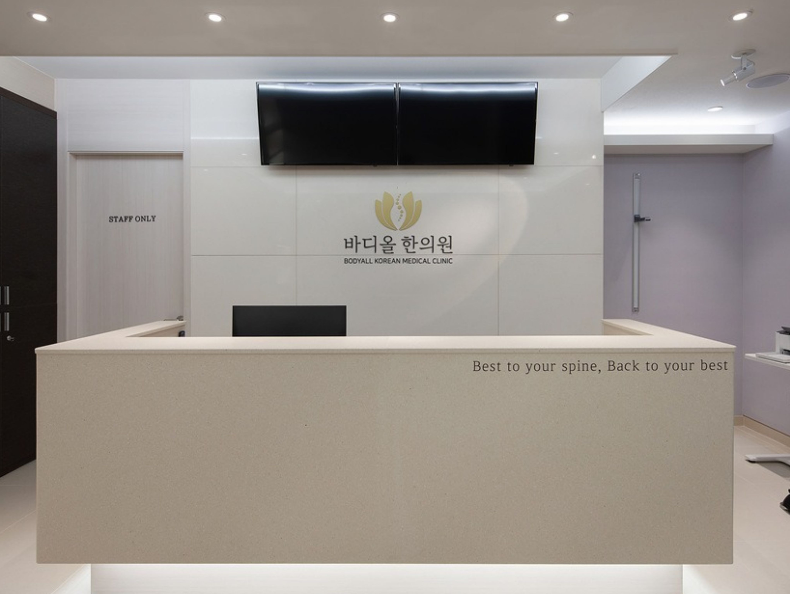

BODY-ALL WIKI
BODY-ALL WIKI
바디올한의원 수원인계 –
365일 진료 통증·교정 백과
"올바른 척추를 통한, 활력넘치는 삶을 추구합니다"

수원 인계동에 위치한 바디올한의원은,
통증이라는 결과물이 아닌 구조적 원인에 집중합니다.
본 위키는 본원 의료진의 임상 노하우와
질환별 핵심 정보를 담은 공식 가이드이며, 최신지견과 논문을 통해 지속적으로 업데이트됩니다.
🏛️ 주요 진료 및 치료법 색인

척추정렬회복술(SART)
공간척추교정. 척추 마디 사이의 공간을 물리적으로 확보하여 신경 압박을 해소하고 세밀하게 척추분절을 하나하나 교정하는 바디올한의원의 핵심 교정술입니다.

추나요법
틀어진 골격을 바로잡고 관절 가동 범위를 복구하는 건강보험 적용 전문 수기 요법입니다. 바디올에서는 기존 추나에 공간척추교정 기법을 더해 더 깊은 교정을 시행합니다.

통증·척추클리닉
디스크, 협착증 등 만성적인 척추 질환의 근본 원인을 분석하고 치료하는 집중 클리닉입니다.

의료진소개
바디올한의원의 의료진을 소개합니다.

도침 (유착박리술)
만성 염증으로 굳고 유착된 조직을 미세 분리하여 고질적인 통증을 해결하는 특수 침도 요법입니다.

고농도 봉약침
정제된 벌독의 소염 작용을 통해 심부 염증을 제거하고 신경 재생을 돕는 천연 치료법입니다.

바디올핏 다이어트
몸무게는 척추건강과 직결됩니다. 가격은 낮추고 효과는 증대시킨, 요요 없이 건강한 감량을 돕는 바디올한의원의 다이어트 치료 프로그램입니다.

씨알공진단/경옥고
전문한의약품 GMP 약재와 현대화된 세밀한 조제법으로, 장기간 척추질환으로 소모된 기력을 보강하고 면역력을 높이는 보약입니다.
Pcode 체질한약
SA3000P 맥파진단과 전통적 한의학 진단을 바탕으로 개인의 선천적 장부 강약을 파악하여, 무너진 신체 밸런스를 바로잡고 질병의 근본 원인을 치료하는 맞춤형 체질 한약 프로그램입니다.
A: 이미 틀어진 척추 구조가 신경 통로를 압박하고 있기 때문입니다.
단순히 근육을 이완시키는 것만으로는 부족합니다. 척추 사이의 '공간'을 먼저 확보하여 신경 압박의 근본 원인을 제거해야만 통증의 반복을 끊어낼 수 있습니다.
🧬 질병 및 증상별 정보 색인

허리디스크 / 협착증
눌린 신경을 해방시키고 척추 마디 사이의 공간을 되살려 통증과 저림을 치료합니다.

목디스크 / 거북목
경추 정렬을 바로잡아 일자목, 거북목에서 기인하는 만성 두통, 목-등통증과 팔 저림을 해결합니다.

자율신경 / 내과 질환
척추 정렬 회복과 오장윤부 균형을 통해 위장 장애, 비염, 불면 등 자율신경계와 면역 질환을 관리합니다.

교통사고 후유증
사고 충격으로 뒤틀린 골반과 척추를 세밀하게 교정하여 만성 후유증을 예방합니다.
👨⚕️ 의료진 소개

이동해 대표원장 (한의사)
"보여주는 치료로 근본적인 변화를
직접 체험시켜 드립니다."
- 임상 경력:
공간척추교정 임상례 40,000건 이상 (25.12 기준) - 전문 약력:
척추진단교정학회 이사 및 교육위원,
전 강남 리봄한방병원 진료원장 - 공신력:
대한한의사협회 지식iN 상담한의사,
가천대 한의과 본과생 특강,
세마고 멘토링 스쿨 강의


